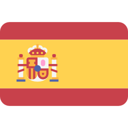
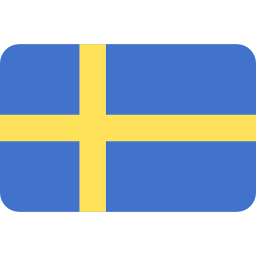
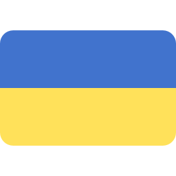
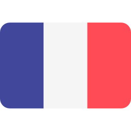

Etusivu
Harjoitukset
Opettajat
Tietoja
Tietovisa lipuista
Tässä visassa testataan maantietoa perinteisellä, lippuvisalla.
Kysymys 1
Minkä maan lippu on kyseisessä kuvassa?
a) Portugali
b) Espanja
c) Ranska
d) Italia
Tarkista
Kysymys 2
Minkä maan lippu on kyseisessä kuvassa?
a) Norja
b) Islanti
c) Ruotsi
d) Tanska
Tarkista
Kysymys 3
Minkä maan lippu onkyseisessä kuvassa?
a) Ukraina
b) Venäjä
c) Valko-Venäjä
d) Romania
Tarkista
Kysymys 4
Minkä maan lippu on kyseisessä kuvassa?
a) Saksa
b) Alankomaat
c) Sveitsi
d) Ranska
Tarkista
Kysymys 5
Minkä maan lippu on kyseisessä kuvassa?
a) Englanti
b) Iso-Britannia
c) Belgia
d) Skotlanti
Tarkista
Tarkista lopputulos!

 Minkä maan lippu on kyseisessä kuvassa?
Minkä maan lippu on kyseisessä kuvassa?